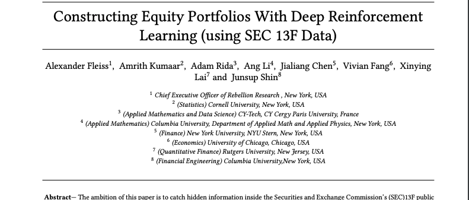
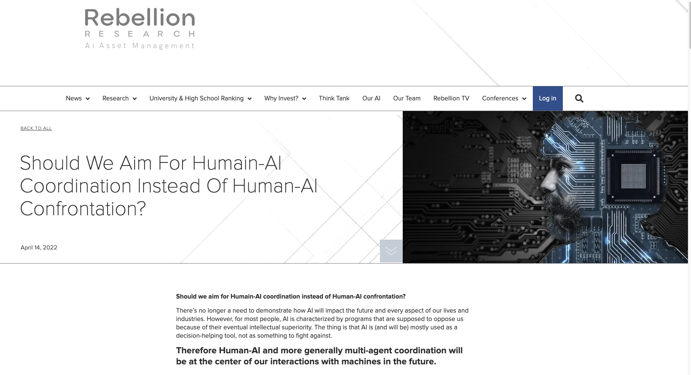
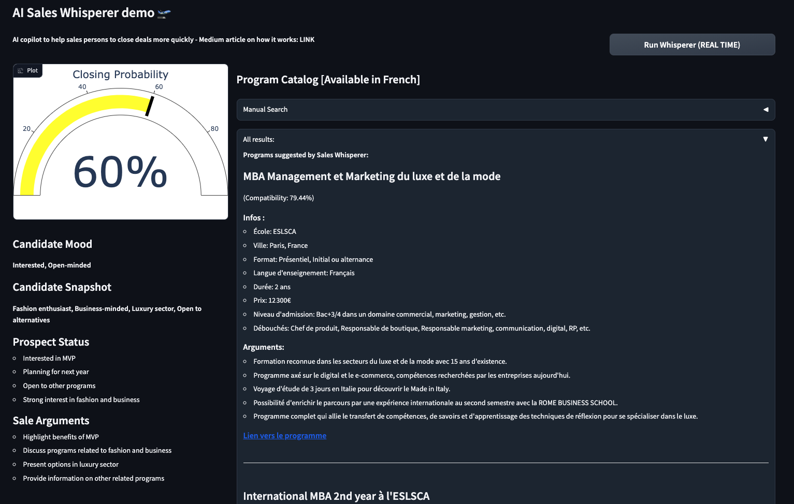

Adam Rida
AI researcher and Data Scientist
ex PhD Candidate in ML at Sorbonne University and AXA | Master's degree in Applied Mathematics from CY Tech
adamrida.ra@gmail.com[download CV] [connect on linkedin]
My name is Adam, I am based in Paris, France, a data scientist with a background in AI research and CS.
I have worked in different companies (Societe Generale, AXA, Qantev, Rebellion Research) in topics related to applied ML and data science.
For a year, I was a PhD candidate at Sorbonne University in the Trustworthy and Responsible AI Lab (TRAIL), a joint venture between Sorbonne and AXA.
I was working on topics related to explainable AI (XAI) and interpretability in the context of model dynamics and concept drift.
I published a research paper in 2023 at the DynXAI workshop of ECML-PKDD 2023.
After a year, I decided to take a leap of faith and join Entreprneur First to start a company. During the program I worked on building an AI platform to help private equity deal teams to screen deals faster. By plugging into the firm's internal data and leveraging advanced RAG approaches (graphRAG and graph neural networks -GNNs-) the tool was able to extract non obvious insights from vast amount of documents. We were the first team of the cohort to release a prototype of our “chat-with-your-data” over 3500+ pages of documents after only 1 week: demo here. In 2 months, I developed alone the first 3 live prototypes which where showcased to 100+ PE funds - including a proprietary state of the art PDF parser (outperforming off-the-shelf libraries such as unstructured).
Education-wise, I obtained my Engineer degree (Master’s degree) at CY Tech, in France and went through Ecole 42 where I learned to code in C. In parallel with my experiences, I have built different side projects to explore different technologies.
Outside of tech, my main hobby is aviation. I am currently working towards my Private Pilot License (PPL) in France and have a few flight hours.
My areas of interest lie in the following:
- XAI and concept drift but more generally AI-Human interactions and how to use AI to augment human’s abilities
- Outlier detection and unsupervised approaches
- Deep learning and latent representations
- LLMs and their ability to augment current unsolved NLP tasks (RAG, document parsing, knowledge representation)
- More generally, projects applying methods from different fields to solve real-life and high-impact problems
After a year, I decided to take a leap of faith and join Entreprneur First to start a company. During the program I worked on building an AI platform to help private equity deal teams to screen deals faster. By plugging into the firm's internal data and leveraging advanced RAG approaches (graphRAG and graph neural networks -GNNs-) the tool was able to extract non obvious insights from vast amount of documents. We were the first team of the cohort to release a prototype of our “chat-with-your-data” over 3500+ pages of documents after only 1 week: demo here. In 2 months, I developed alone the first 3 live prototypes which where showcased to 100+ PE funds - including a proprietary state of the art PDF parser (outperforming off-the-shelf libraries such as unstructured).
Education-wise, I obtained my Engineer degree (Master’s degree) at CY Tech, in France and went through Ecole 42 where I learned to code in C. In parallel with my experiences, I have built different side projects to explore different technologies.
Outside of tech, my main hobby is aviation. I am currently working towards my Private Pilot License (PPL) in France and have a few flight hours.
My areas of interest lie in the following:
- XAI and concept drift but more generally AI-Human interactions and how to use AI to augment human’s abilities
- Outlier detection and unsupervised approaches
- Deep learning and latent representations
- LLMs and their ability to augment current unsolved NLP tasks (RAG, document parsing, knowledge representation)
- More generally, projects applying methods from different fields to solve real-life and high-impact problems
Publications and Blogs
Show me in Google Scholar or Medium

Dynamic Interpretability for Model Comparison via Decision Rules (Accepted at the DynXAI workshop at ECML-PKDD 2023)
Adam Rida, Marie-Jeanne Lesot, Xavier Renard, Christophe Marsala
TL;DR: The DeltaXplainer paper introduces a method to explain differences between machine learning models in an understandable way. It uses interpretable surrogates to identify where models disagree in predictions. While effective for simple changes, it has limits in capturing complex differences. The paper explores its methodology, limitations, and potential for improving understanding in model comparisons.
[arxiv] [github] [python package] [blog post]

TL;DR: The DeltaXplainer paper introduces a method to explain differences between machine learning models in an understandable way. It uses interpretable surrogates to identify where models disagree in predictions. While effective for simple changes, it has limits in capturing complex differences. The paper explores its methodology, limitations, and potential for improving understanding in model comparisons.
[arxiv] [github] [python package] [blog post]
Deep Reinforcement Learning & Feature Extraction For Constructing Alpha Generating Equity Portfolios
Alexander Fleiss, Amrith Kumaar, Adam Rida, Ang Li, Jialiang Chen, Vivian Fang, Xinying Lai and Junsup Shin
[ssrn] [github]
[ssrn] [github]
Why Does Nobody Want Crypto?
Adam Rida
[blog post]

[blog post]
Should We Aim For Humain-AI Coordination Instead Of Human-AI Confrontation?
Adam Rida
[blog post]
[blog post]
Open Source Projects

Temporal Augmented Retrieval (TAR) - Dynamic RAG
TL;DR: Temporal Augmented Retrieval (TAR) enhances traditional retrieval methods by considering time dynamics in textual data, crucial for understanding evolving topics. It detects emerging trends, aids in market trend anticipation, and uncovers cross-selling opportunities in client data. TAR's process involves query augmentation, meta-temporal data analysis, and context merging, aiming to provide insights into topic evolution. This project has been done in the context of buildspace's nights and weekends s4 program.
[github] [blog post] [hugging face]

Sales AI Whisperer
TL;DR: The Sales AI Whisperer offers real-time insights for sales meetings, aiding discussions and suggesting tailored products. Originally designed for Planeta, it uses advanced tech to analyze meetings and empower sales teams. The tool's mechanics involve recording, GPT-4-based insights, and a user-friendly dashboard. It aims to improve sales strategies and welcomes contributions for further development.
[github] [blog post]